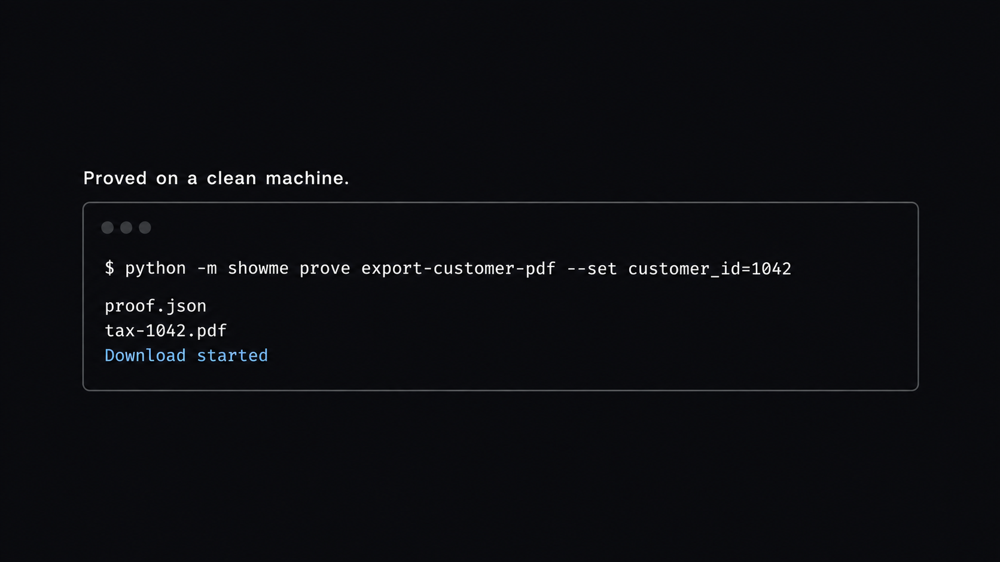

Show it once. Prove it on a clean machine. Any agent can run it.
Two demonstrations become one Agent Skill. The repeat writes the tax PDF in local Python. It spends no model tokens, and a renamed button stops the run.
-
showme induce
Show the work twice.
A value that changes, a customer id or a server, becomes a parameter. A click or a path that changes is a different workflow, and induction refuses it.
$ python -m showme induce two-runs.json --out demonstration.json
-
showme prove
Prove it where the recording never was.
The skill opens the billing portal and must write
tax-1042.pdf. The page has to say the download started. An unknown customer writes no file.$ python -m showme prove export-customer-pdf --download-dir ./proof --set customer_id=1042
-
halt
A renamed button stops the run.
If Export PDF is gone, the run does not click a neighbor. It names the missing label and the controls that are actually on the page. Retarget points that one step at the new label.
$ python -m showme retarget export-customer-pdf export "Download PDF"
-
any agent
The same folder, four agents.
Bob, Claude Code, Cursor, and Codex read one
SKILL.md. The proved steps stay in the player. The model is not called again to remember the clicks..agents/skills/ · .claude/skills/ · .cursor/skills/
your demonstrationsthe clean runthe stopthe agents

site/assets/product.png when you have it.All the way down.
One proved skill. Bob runs the tests. Claude Code, Cursor, and Codex read the same folder and repeat the work without another vision pass.
The only job for Bob: run this. It proves the PDF, the unknown customer, and the renamed button.
.claude/skills/export-customer-pdf/SKILL.md
Claude Code loads the folder. The player repeats the proved steps.
.cursor/skills/export-customer-pdf/SKILL.md
Cursor reads the same skill. The parameters stay customer_id and portal_url.
.agents/skills/export-customer-pdf/SKILL.md
Codex gets the same trace. A repeat does not re-watch the screen.
Where it sits.
A browser agent pays a model every time it looks. A classic RPA suite sells a seat and a selector. ShowMe’s proved repeat is local Python, so the model bill on that run is zero.
| Stochastic browser agent | Traditional RPA | showme | |
|---|---|---|---|
| What a repeat costs | A model bill every run. A long look-at-the-screen task is often tens of thousands of vision tokens. | A commercial seat. UiPath prices bots by license, not by token. | $0 in model tokens. The player is local Python. |
| A wrong control | The model can click it. | The selector breaks, or a fallback clicks something nearby. | The run stops and names the label. No PDF is written. |
| What changes between runs | Whatever the prompt happens to type. | Literals stay baked in unless someone edits the bot. | Only values that differed across two demonstrations. |
| Who can run it | That agent’s session. | The RPA studio. | Bob, Claude Code, Cursor, Codex. Same folder. |
| Seat price | The model vendor’s rate. | Ask the vendor. It is not free. | No seat. The tool is MIT and stays on this machine. |
The token line is the shape of a vision-agent run, not a bill we metered. UiPath does not publish one number that fits every contract. The zero is the part we run: showme prove does not call a model.
Run it.
Python 3.11 or newer. The billing portal in this repo is the clean machine. Twenty minutes is enough to induce, prove, and watch a renamed button stop.